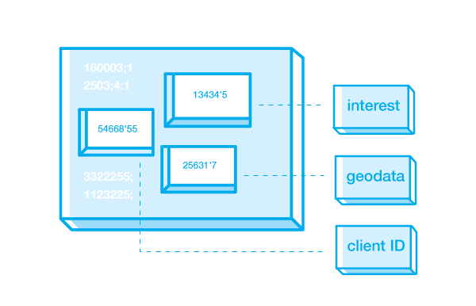
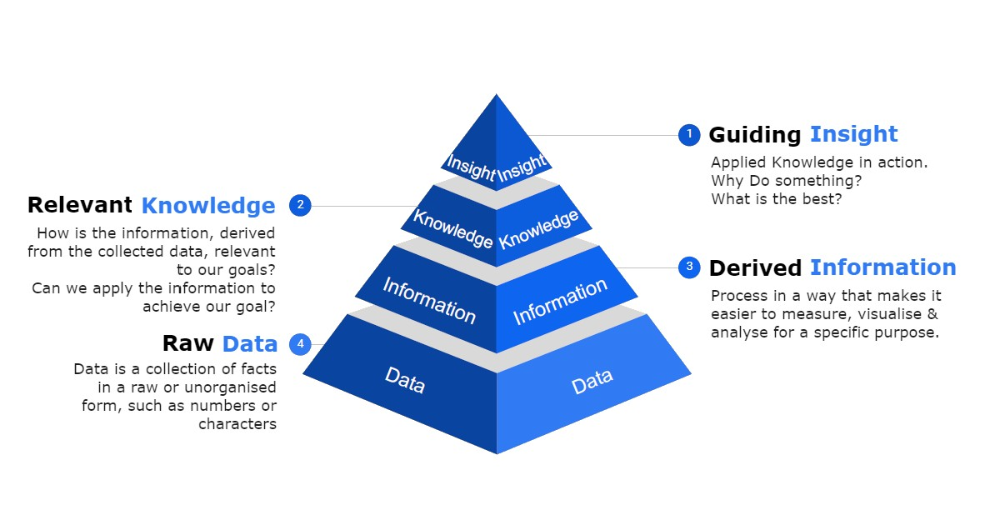
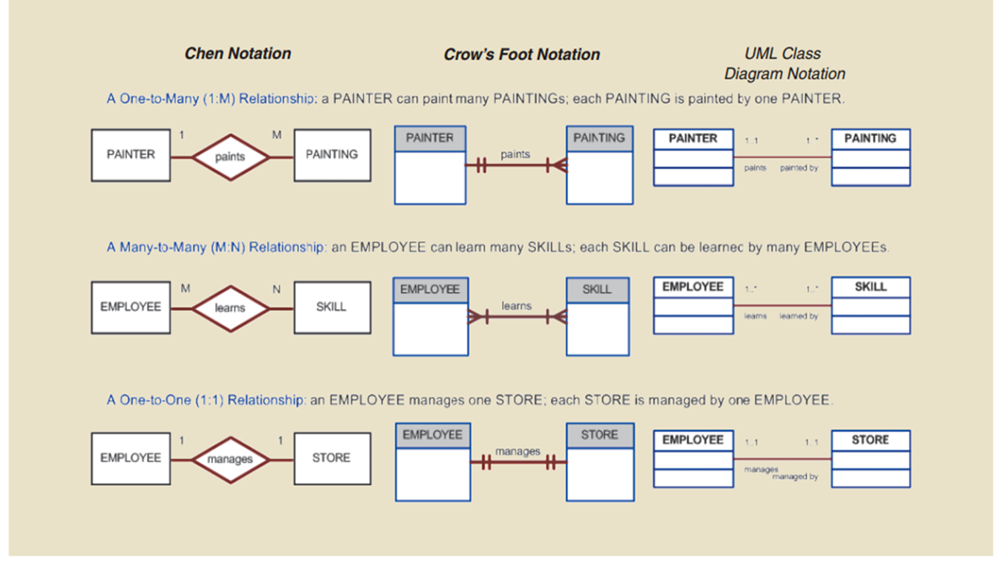
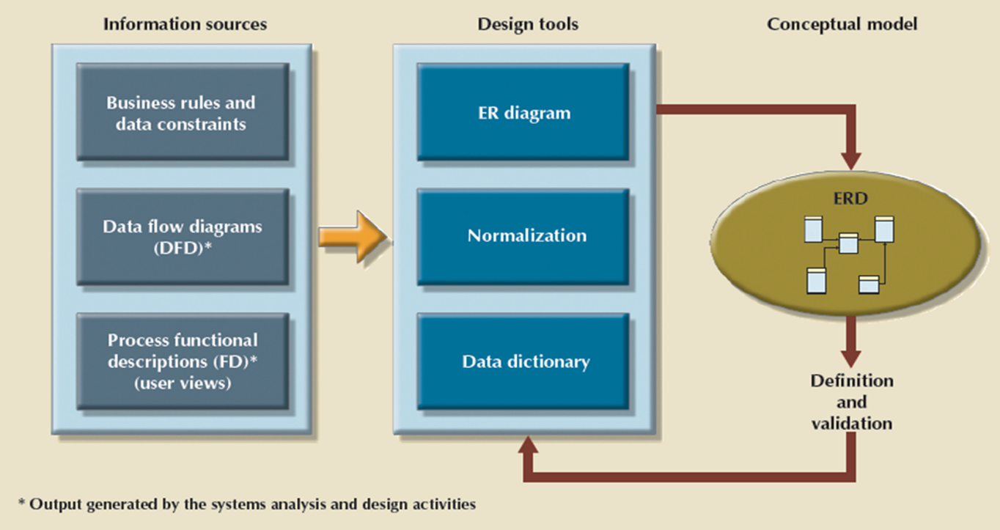
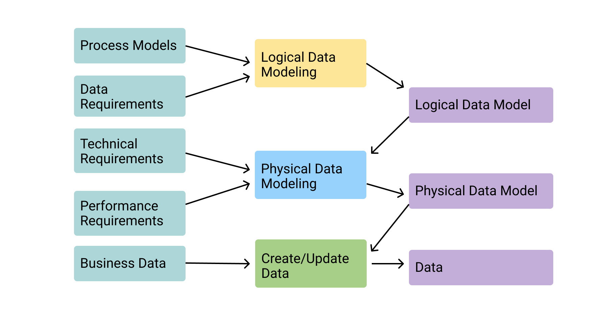
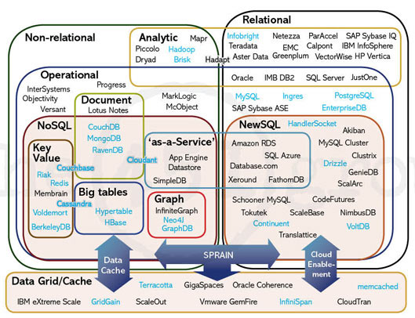

Data + Data Modeling
Data | Data Exchange Formats | Data Modeling
Objectives
- Data Exchange Formats
- JSON | XML | Protobuf
- Requesting Data
- XMLHTTPRequest | Fetch | AJAX
- Modern Frameworks
- Understanding what is Data
- Data Modeling
- Conceptual | Logical | Physical
- Implementing SQLite into Node.js app
- Database Security Measures
What is Data?
Raw Data
Data
- Data - Consist of raw facts
Raw Data
- Raw Data - indicates that the facts have not yet been processes to reveal their meaning.
The purpose of collecting raw data is to extract meaning.
Data Pyramid
Raw Data
Information
Knowledge
Intelligence / Insight / Wisdom
Why is it important to think of data in this structure?
Data Modeling
Minimum data rule: All that is needed is there, and all that is there is needed
Conceptual Design
- Design a database independent of database software and physical details Conceptual data model – Describes main data entities, attributes, relationships, and contraints
Logical Design
- The process of transforming (or mapping) a conceptual schema of the application domain into a schema for the data model
- some software is typically to create and map this model
Physical Design
- modifies how the data is formatted (framed) and transported between the client and server, both of which manage the entire process, and hides all the complexity from our applications within the new framing layer
- The process of transforming logical data models into physical data Models
Conceptual Model
Types of ER-Models
Conceptual Model Cont.
Conceptual Modeling is an iterative process that requires you to constantly revisit your conceptual model and make alterations

MPLS Renters Example
Entities and the Relationships that exist
Subset of Relationships Rules:
A PROPERTY can be associated with one or more PROP_AMEN_LIST, each PROP_AMEN_LIST can be associated with one PROPERTYA PROPERTY can be added zero or morePROPERTY_LIST, each PROPERTY_LIST can be added to one PROPERTY
MPLS Renters Example
Entities and the Relationships that exist
What is Depicted in ER Diagram:
Entity NameEntity StrengthRelationship Strength(Week and Strong)CardinalityNull vs. Not NullSometimes the Data type
Logical Model
Logical Model
A logical design is a conceptual, abstract design. You do not deal with the physical implementation details yet; you start to define the types of information that you need.
Different Types of DB
Selection of DB should be based upon how, when, where and who will use the data.
Relational & Non-Relational are the overarching categories of DB's
Tools
A number of tools can help with visualizing and database script creation
ER Modeling tools
- Draw.io
- ER Concepts 8
- SQL Designer Database Interface Tools
- DB Browser
- DB Beaver
- MySQL WorkbenchIDE/Editor tools
SQL Statement to execute our example
CREATE TABLE "USER" (
"user_id" INTEGER,
"user_email" TEXT NOT NULL,
"user_password" TEXT,
PRIMARY KEY("user_id" AUTOINCREMENT)
);
CREATE TABLE "TASK" (
"task_id" INTEGER,
"task_user_id" INTEGER NOT NULL,
"task_category" TEXT,
"task_description" TEXT,
FOREIGN KEY("task_user_id") REFERENCES "USER"("user_id"),
PRIMARY KEY("task_id" AUTOINCREMENT)
);
Physical Model
Database Tables Created
- 1) Create Tables
- 2) Columns - Primary key determination, Null or Not Null identified, Column constraints
- 3) Querying of Tables using SQL
- 4) Load Balancing and Database Optimization using index's and hybrid tables (views)
- 5) Restricting database access and authorization. Who has DDL or DML querying priveleges?
Which of the following statements is not true regarding the conceptual and physical layer?
- A. Entities in Conceptual model map to Tables in the Physical model
- B. Attributes in the Conceptual model map to table columns in the Physical model
- C. The physical layer does not depict whether columns can be null or not null.
- D. All of the options presented are true statements
(True or False) A Weak entity can be determined by the specification of the key?
- A. True
- B. False
(True or False) A Weak relationship in a conceptual model is indicated by a solid line linking the two entities?
- A. True
- B. False
Node.js and SQLite
Getting Started with Implementing SQLite Database
SQLite - Configuration steps below:
- Step 1 - Import database drivers via NPM
- Step 2 - Make connection to database
- Step 3 - Query Database
- Step 4 - Configure session store
Step 1 - Install Dependencies
When incorporating a database, we need both the drivers and functionality to configure our session store
npm install sqlite3 //install sqlite database drivers
npm install connect-sqlite3 //install module to configure session store
Step 2 - Making connection to Database
Create a config file that will store your configurtion
var sqlite3 = require('sqlite3').verbose() //npm install sqlite3
const bcrypt = require('bcryptjs');
//Creating a new database instance - Indication of connected database
//Before peforming any operations to database, make sure database is connected.
let db = new sqlite3.Database('./mplsrenter.sqlite', (err) => {
if (err) {
// Cannot open database
console.error(err.message)
throw err
}else{
//Successful database connection
console.log('Connected to the SQLite database.')
}
});
Step 3 - Context File "database.js"
Helpful to place database operations into a file and import database functions into other parts of program when needed.
Helpful resource on querying database https://www.sqlitetutorial.net/
//Create a profile
let createProfile = (profile) =>{
var createProfileSql ='INSERT INTO PROSPECTIVE_PROFILE (prof_id, prof_firstname,prof_lastname, prof_address, prof_decision_date, prof_email, prof_password, prof_phone, prof_rent_range, prof_image_url, prof_class_num) VALUES (?,?,?,?,?,?,?,?,?,?,?)'
var params =[null, profile.firstName, profile.lastName, null, profile.move_date, profile.userEmail, profile.user_password, null, profile.user_rent_range, './images/user_profile_images/generic_profile_img.png', null];
db.run(createProfileSql, params, function(err){
if (err){
return console.log(err.message);
}
console.log("Profile Created");
console.log(`Rows inserted ${this.changes}`);
});
}
//Return a user from database
let authenticateUser = (username, password, done) =>{
var findUser = 'SELECT * FROM PROSPECTIVE_PROFILE WHERE prof_email = ?';
db.get(findUser, username, function (err, user) {
console.log(user);
if (!user) {
return done(null, false);
}
bcrypt.compare(password, user.prof_password, function (err, result) {
if (err) {
return console.log(err.message);
}
if (result) {
return done(null, user);
}
});
});
}
//Export functions to be used in other areas of program.
module.exports = {db, createProfile, authenticateUser}
Step 4 - Configure session store
NPM module reference - connect-sqlite3
//Require dependencies you installed
var createError = require('http-errors');
var express = require('express');
var session = require('express-session');
var path = require('path');
var cookieParser = require('cookie-parser');
var logger = require('morgan');
var hbs = require('hbs');
const passport = require('passport');
var session = require('express-session');
var SQLiteStore = require('connect-sqlite3')(session);
//passport config
require('./config/passport')(passport);
var session_config = {
secret: 'secret', //a random unique string key used to authenticate a session
resave: true, //nables the session to be stored back to the session store, even if the session was never modified during the request
saveUninitialized: true, //his allows any uninitialized session to be sent to the store. When a session is created but not modified, it is referred to as uninitialized.
cookie: { secure: true }, //true is a recommended option. However, it requires an https-enabled website
//store parameter when saving session to database
store: new SQLiteStore
};
session_config.cookie.secure = false;
//IMPORTANT REVIEW IN CLASS - https://expressjs.com/en/resources/middleware/session.html
//Express Sessions
app.use(session(session_config))
//Reference for above - https://www.section.io/engineering-education/session-management-in-nodejs-using-expressjs-and-express-session/
//Passport middleware
app.use(passport.initialize());
app.use(passport.session());
Suggested Reading
- Forthcoming